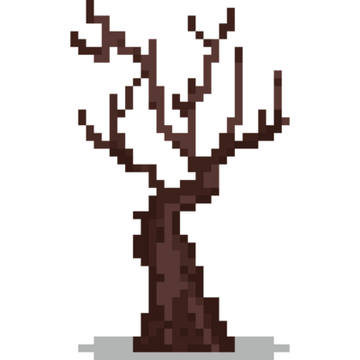

Silent Hill
Isso daqui é um jogo, é um lugar, é um conceito, uma estética, um gênero musical e muitas
outras coisas, mas pra mim é tudo isso e um pouco mais.
Antes eu quero deixar claro que eu nunca
joguei ou tive a oportunidade de jogar algo dessa franquia e eu nem nunca tinha acompanhado gameplays dela,
mas algo além disso me atraiu para Silent Hill.
Descobri isso daqui por acidente, é que eu gosto de
escutar sons calmos e/ou constantes pra escutar enquanto estudo, então eu colocava algo como lofi study,
depois vapowave, e só então, por conta do play automático do yt apareceu pra mim uma música de ambiente de
SH, e eu gostei.
Essas músicas de ambiente carregam consigo elementos que me encantaram de primeira
: o som melancólico, a estética ps1 e em especial o título dessas músicas. Eram títulos como "be safe for a
moment" ou "a memory that never exist" e "alone in this town", são títulos tão escapistas e que remetem essa
fuga da realidade, fuga para um refúgio, um lugar que nada e mais ninguém poderá lhe machucar a não ser os
seus próprios sentimentos, pensamentos e essa bagagem toda que ambos carregam.
Eu tenho que também
deixar escrito aqui como eu adimiro a combinação desse conceito + efeitos visuais em si. Todos os vídeos,
gameplays desse jogo em si, é carregado por uma densa névoa que te impede de saber o que está por vir, que
tá amarrado com a estética do fogcore (outra coisa que pode render um post só disso) e tudo mais.
Acima de tudo isso, é legal ver os comentários de todos os vídeos que eu encontro, comentários esses
inspiradores, pessoas contando como passaram ou passam por momentos tão difíceis e que com certeza irá gerar
alguma cicatriz em sua vida, mas que mesmo assim, encontram um meio de superar esses momentos.
